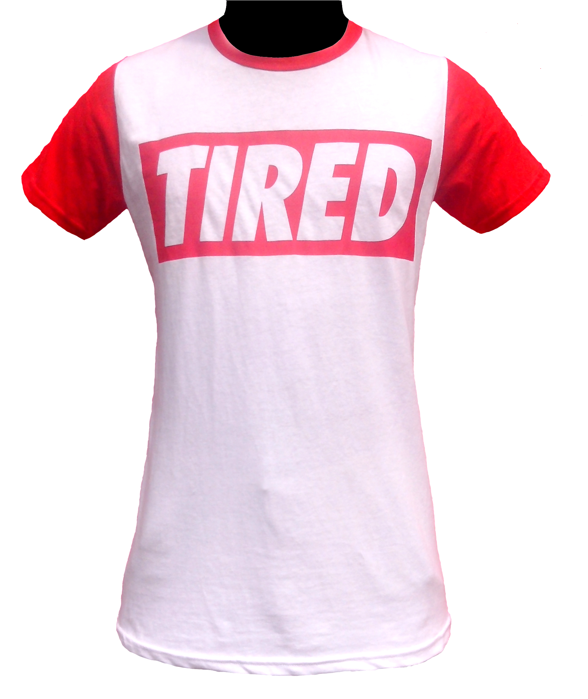

a) Action 1. When we may require the use of go-to-instructions in a decision table. a) To show all the processing required in a program but this is awkward. b) To show the processing required in a program but this is awkward. c) To show a processing required in a program but this is awkward. d) To show all the processing unrequired in a program but this is awkward. A field in memory, having the values of true or false, that is used to record a condition
